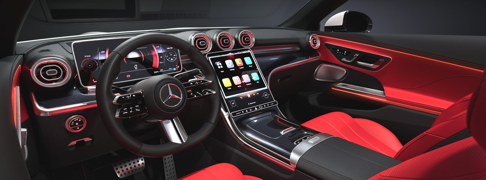
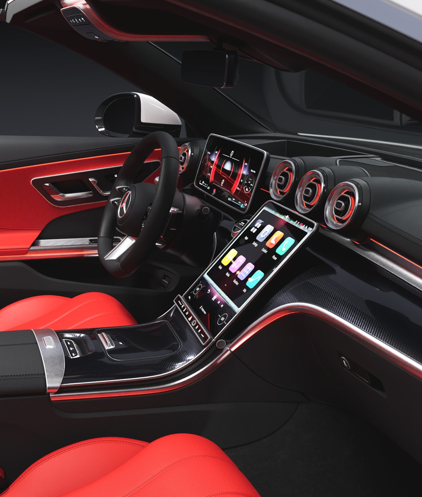

Representing the pinnacle of emotional design, the CLE Cabriolet demands a precise balance of form and atmosphere for premium users.


Starting from an existing base model, the UVs were re-edited and the car was rigged for sensitive posing and animation.


Focus was placed on a stance ready to dash forward. Delicate lighting highlights the fluid forms, and the wrap-around angle underscores the liberated feel of cruising open-top.


Textures of carbon, fine leather and stitching were meticulously rendered to express the interior craftsmanship. Soft ambient lighting delivers the car's gentle illumination.





An open-top grand tourer that harmonizes elegant design with a premium aesthetic. The visualization focuses on the car's graceful silhouette and its high-fidelity details, in the setting of its audience's lifestyle.

Comments
Refer to plates by number, e.g. “3.02 — the shoulder line …”
(fixed section, widget not connected in this draft)